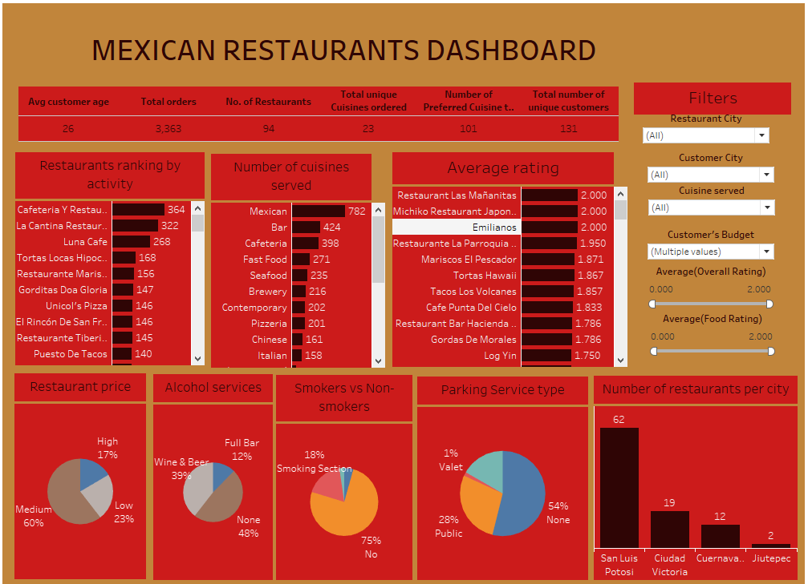
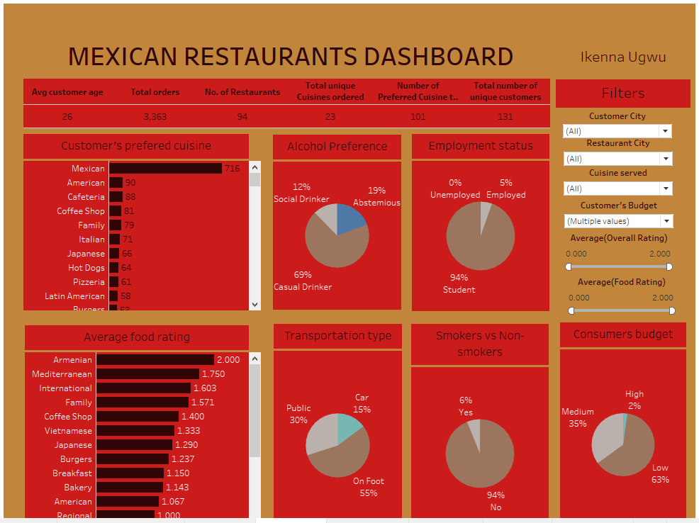

About this Project
Background
Analysis on Mexican restaurants
Goal
The main goal was to conduct an exploratory data analysis on restaurants in four Mexican cities: San Luis Potosi, Ciudad Victoria, Cuernavaca, Jiutepec.
Methodology
Data was obtained from Quantum Analytics Google Drive. Five tables in CSV format were imported into Tableau. The consumer preference and ratings were joined to consumers via consumer ID, while restaurant cuisines and restaurants were joined to ratings via restaurant ID. Dashboards were created using appropriate charts and graphs to visualize the findings.
 Key Insights
General
Overall, there were 94 restaurants with 3,363 orders. 23 unique cuisine orders were made, although the customers had 101 unique preferred cuisines. There were a total of 131 unique customers with an average age of 26 years.
Restaurants
The top restaurants based on activity were Cafeteria Y Restaurant El Pacifico, Le Cantina Restaurante, and Luna Cafe, each with over 250 orders. However, Restaurant Las Mananitas, Michiko Restaurant Japones, and Emilianos had the highest average rating of 2.
San Luis Potosi had 62 restaurants, while Ciudad Victoria had 19, and Cuernavaca and Jiutepec had 12 and 2 respectively.
In terms of the price of cuisine offered, 16.5% offered high-priced cuisines, while 60% and 23% offered medium and low-priced cuisines respectively. Regarding alcohol services, wine and beer were served in 39% of restaurants, 12% offered full bar services, while the remaining did not offer any.
Additionally, smoking was not allowed in 75% of the restaurants. 17% had parking services, with 1% offering valet services.
Cuisines
Mexican cuisines were served the most. Other top dishes were bar, cafeteria, fast food, and seafood. The least served were Vietnamese, regional, Mediterranean, and Armenian, each with fewer than 10 orders.
Mexican cuisines were preferred in 716 orders, followed by American and Cafeteria at 90 and 88 respectively. Armenian dishes had a maximum rating of 2, with Mediterranean, International, and Family cuisines all above 1.5.
Consumers
About 63% of the consumers had a low budget, 35% had a medium budget, and 2% had a high budget. Approximately 94% of them don't smoke.
In terms of transportation type, 55% arrived on foot, 30% came in public transport, and the remaining 15% came in a car. Students made up 94% of the consumers, while 5% were employed and 0.33% were unemployed.
Recommendations
- More data needs to be collected on the population of other cities for analysis on the need for more restaurants in those areas.
- Offer more cuisines to meet consumer preferences, as data suggests that choices were limited to Mexican cuisine.
- Consider smoking permissions, given that nearly 95% of consumers are non-smokers.
- Make more dishes affordable in the medium and low budget range, considering a high proportion of consumers fall within these categories, especially students.
- Collect additional data on the cost of meals to conduct revenue and profit analysis, enabling improved business outcomes.
This analysis report provides valuable insights into the Mexican restaurant industry and offers actionable recommendations to enhance operational strategies and customer satisfaction.